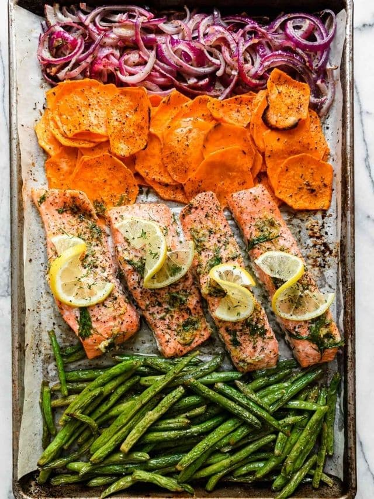

The beauty of this recipe is that it requires very little prepping, and it will still come out of the oven looking and tasting delicious.
It's a good solution when having guests over, or when a healthy yet tasty dinner is in order.